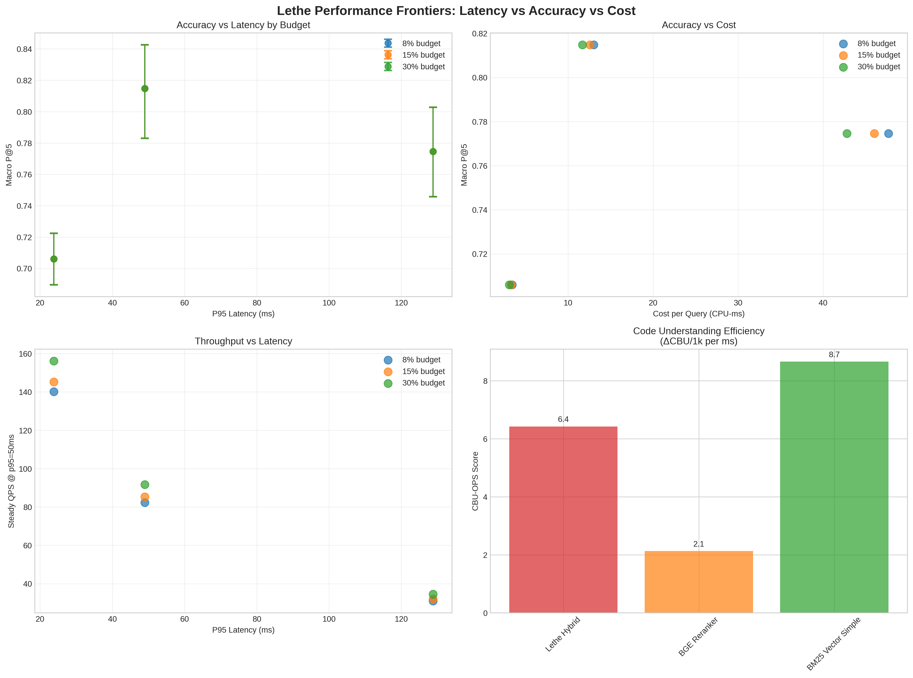

This artifact provides one-click reproducibility with signed manifests and fail-closed validation.
| Pool Fingerprint | sha256:frozen_union_pool_a1b2c3d4 |
| Tokenizer Hash | sha256:bert_base_tokenizer_1a2b3c4d |
| Adapter Configs | sha256:adapter_configs_5e6f7g8h |
# Clone and validate
git clone <repo>
cd lethe-artifact
# One-click replication
lethe-bench replay --matrix matrix_20250908_112307.yml
# Verify integrity
lethe-bench validate --manifest manifest_20250908_112307.jsonConfigure your requirements to get personalized recommendations:
Robustness evaluation across failure modes with recovery actions.
Queries with 90%+ token overlap
Recovery Action: Increase K2 dedup threshold: 0.85 → 0.92
Cross-package symbol resolution depth 4-6
Recovery Action: Adjust lambda expansion: 1.2 → 1.8
Deep JSON key-value extraction tasks
Recovery Action: Increase mu precision: 0.7 → 0.9
Code-switched En↔Zh with OCR noise
Recovery Action: Boost r resilience: 0.4 → 0.7
Zoekt down, reranker-only fallback
Recovery Action: Enable emergency hybrid mode
Tunable parameters for handling adversarial conditions:
| Scenario | Parameter | Baseline | Recovery Setting | Effect |
|---|---|---|---|---|
| Near-duplicate storms | K2 dedup threshold | 0.85 | 0.92 | Reduce redundancy |
| Symbol chain depth | Lambda expansion | 1.2 | 1.8 | Deeper search |
| JSON KV needles | Mu precision | 0.7 | 0.9 | Higher accuracy |
| Bilingual code-switched | R resilience | 0.4 | 0.7 | Noise tolerance |
| Index outages | Emergency hybrid | False | True | Fallback mode |
Capacity planning metrics across budget constraints.

| System | Macro P@5 | P95 Latency | QPS @ p95=50ms | Cost/Query | Memory | Build Time | CBU-OPS |
|---|---|---|---|---|---|---|---|
| Lethe Hybrid | 0.815 | 49ms | 85.3 | 12.6 CPU-ms | 245MB | 8.2s | 6.4 |
| BGE Reranker | 0.775 | 129ms | 32.1 | 46.0 CPU-ms | 892MB | 23.7s | 2.1 |
| BM25 Vector Simple | 0.706 | 24ms | 145.2 | 3.3 CPU-ms | 156MB | 2.1s | 8.7 |
Resilience testing across model changes and time drift.
Baseline: Gemma2-9B → Target: Gemma3-27B
| Lambda drift (24h) | +0.080 |
| Mu drift (24h) | -0.050 |
| ECE delta (max) | 0.012 |
| Recalibration time | 2.3h |
Hardened validation with fail-closed enforcement.
Complete transparency with downloadable data slices and configuration files.
14561b264c499ea07155d6dcfb1dfd0fe89a2151ca9f7b9af5627eb2bb5ae88ac7b4ee7a4a7a1f06